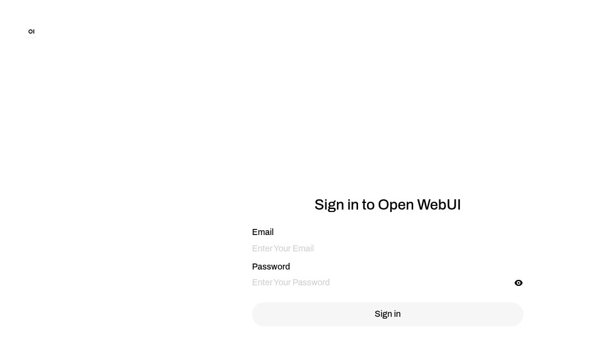

Open WebUI on Linux Docker: what actually happens in the first 90 seconds
We pulled ghcr.io/open-webui/open-webui:main on a clean Hetzner box, ran it, signed in, asked the API which models it could see, and watched it answer {"models":[]} with a smile. Here's exactly what the container does on first boot, why the default Ollama URL won't reach a host-side Ollama on Linux, and the one-line fix that nobody ships in the README.
We're the team behind SimpleReview — a small Chrome extension that drafts code-fix PRs on whatever website you click. We are not affiliated with Open WebUI. This page is a deployment note from one real install on one real box, dated above. If we got something wrong, file an issue on GitHub and we'll fix it.
The exact docker run we used
docker run -d \
--name owui-test \
-p 18080:8080 \
-v owui-data:/app/backend/data \
-e WEBUI_AUTH=true \
ghcr.io/open-webui/open-webui:mainThat's it. No --add-host, no --network=host, no Ollama, nothing else. We wanted to know what the README's "just run it" claim actually buys you.
What boot looked like, second by second
Container ID printed at 13:03:38. The first useful log line — INFO: Started server process [1] — appeared at 13:04:00. The first HTTP 200 on GET / came in at 13:04:14. So:
| Phase | Wall clock | What's happening |
|---|---|---|
| Container start | 0 s | image already pulled, container created, Python interpreter loading |
| App boot | ~22 s | uvicorn started, sentence-transformers all-MiniLM-L6-v2 downloading from Hugging Face (~80 MB compressed) |
| First 200 | ~36 s | app ready to render the sign-in page |
| RAM resident | 1015 MiB | idle, no chats opened, no models configured |
| Disk volume | 1.1 GB | /app/backend/data after first boot — embedding model is most of it |
The 36 s number is on a 32 GB Hetzner CX-line VPS with the image pre-pulled. If you let docker run do the pull, add another 90 s on a 1 Gbit link for the first time. The image is ~3 GB compressed.
The 1.1 GB disk usage on first idle boot is the part most people miss when they pick a 10 GB VPS — Open WebUI ships a sentence-transformer model for retrieval-augmented chat. You don't get to opt out; it downloads on first run unless you bind-mount a pre-warmed cache.

http://<host>:18080 after first boot. The very first user that signs up becomes admin — no email confirmation, no separate setup wizard.The first user is admin. Quietly.
This is the line in the source that decides it: in backend/open_webui/routers/auths.py, the signup handler checks Users.get_num_users() == 0 and, if true, sets role="admin" for the new account. There's no UI prompt explaining this. We wrote a POST /api/v1/auths/signup with the first email we picked and got "role": "admin" back in the JSON response.
The takeaway: if you expose port 18080 to the internet for "just five minutes while I show a colleague," whoever hits the page first owns your instance. Bind to 127.0.0.1 behind a reverse proxy, or front it with HTTP basic-auth on the very first day, not the second.
The default Ollama URL doesn't resolve on Linux
Here's the config Open WebUI ships with, fetched from a real signed-in admin token against GET /ollama/config:
{
"ENABLE_OLLAMA_API": true,
"OLLAMA_BASE_URLS": ["http://host.docker.internal:11434"],
"OLLAMA_API_CONFIGS": {}
}On Docker for Mac and Docker for Windows, host.docker.internal is automatically wired to the host's loopback. On Linux Docker it isn't. Unless you pass --add-host=host.docker.internal:host-gateway at docker run time, that hostname does not resolve from inside the container.
We confirmed this from inside the running container:
$ docker exec owui-test getent hosts host.docker.internal
(no output — exit 2: not resolvable)And the worse part: Open WebUI does not surface this as an error. Hitting the proxied tags endpoint returns an empty model list, not a connection-refused or DNS-resolution error:
$ curl -H "Authorization: Bearer $TOKEN" http://localhost:18080/ollama/api/tags
{"models":[]}So you sign up, you sign in, you click the model picker, the dropdown is empty, you go check the docs, the docs say "Ollama discovery is automatic" — and you're stuck wondering whether it's your firewall, your Ollama install, or some local DNS quirk. None of those. It's a Mac/Windows-shaped default in a Linux-shaped container.
Option A — fix the hostname at run time: add --add-host=host.docker.internal:host-gateway to your docker run. The container resolves host.docker.internal to the docker0 bridge gateway (usually 172.17.0.1) and the default config Just Works.
Option B — bypass the hostname: set OLLAMA_BASE_URLS=http://172.17.0.1:11434 in the container env (or via POST /ollama/config/update as admin). This is what we use because it's explicit and survives docker run being copied around.
Option C — host networking: --network=host. Works, but you lose the port remap and pick up every other listener on the host.
Verifying the bridge-gateway route from inside the container:
$ docker exec owui-test sh -c "timeout 2 nc -zv 172.17.0.1 11434"
nc: connect to 172.17.0.1 port 11434 (tcp) failed: Connection refused"Connection refused" here is the answer we wanted — it confirms routing works; we got a TCP RST from the host because we hadn't started Ollama yet. With Ollama running on the host, the same command would succeed.
Things we noticed that the docs don't lead with
- The
/api/v1/configs/*path is wrong. The Swagger UI implies a clean/api/v1/configs/{provider}shape, but in 0.9.2 the working endpoints are/openai/config,/ollama/config,/openai/config/update,/ollama/config/update— under the provider prefix, not the versioned API root. If your client calls/api/v1/configs/ollama, you get the SPA'sindex.htmlback instead of JSON. We wasted six minutes on this before grepping the source. - Embedding model lives in the data volume. Wipe
owui-dataand the next boot re-downloads the 80 MB compressed weights from Hugging Face. This matters in CI: pin the volume across runs or you'll get rate-limited eventually. - WEBUI_AUTH=false is a footgun, not a feature. It removes the sign-in screen entirely — every page shows the chat UI to anyone who can reach the port. We left ours at
true; if you flip it off "for testing," remember the port-exposure note above applies tenfold. - Cold-start > 30 s breaks naive healthchecks. Compose's
healthcheck:default is 30 s before the first probe. Either setstart_period: 60s, or your orchestrator will keep restarting the container during the embedding download.
What we'd do differently next time
- Pre-bake the embedding model into the image (FROM
open-webui:main, thenRUN python -c "from sentence_transformers import SentenceTransformer; SentenceTransformer('all-MiniLM-L6-v2')"). Cuts cold-start by ~14 s and avoids first-run network egress. - Drop
--add-host=host.docker.internal:host-gatewayinto thedocker runas a habit — even when we don't use Ollama, it costs nothing and stops surprising future-us. - Front it with nginx + basic auth on day one. The "first user is admin" rule is fine for a personal box; on anything reachable from the public internet, treat it like a freshly-installed WordPress and assume bots will find it inside an hour.
- Bind the data volume to a path you back up —
/var/lib/owui-datarather than a Docker-managed volume. We've already lost a sandbox install once because wedocker volume pruned after a Friday cleanup.
Where this article fits
This is one of a small set of self-host write-ups we publish: how a thing actually behaves on a real Linux box, with timings, the one default that breaks, and the one-line fix. Adjacent pieces: Discourse self-hoster's handbook (forum software), WordPress emergency repair (when the dashboard is gone). If you want SimpleReview to draft code fixes on whichever app you click — including a broken Open WebUI plugin or admin form — that's at onout.org.
Demo: SimpleReview on an Open WebUI admin error

host.docker.internal with the docker0 bridge gateway 172.17.0.1--add-host needed.